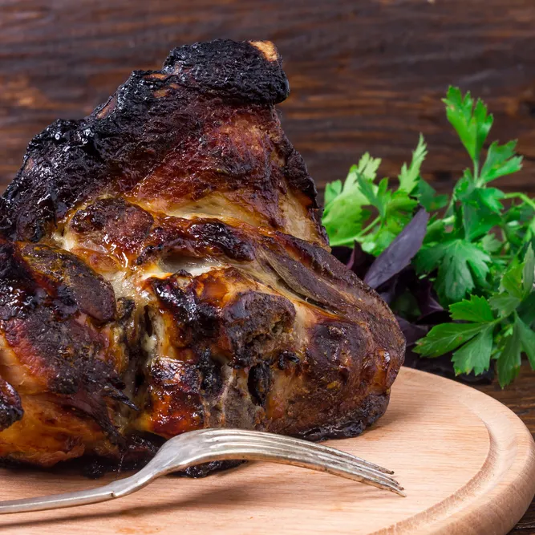

Feast of Valhalla: Roasted Boar of the Nine Realms

A royal Asgardian dish served in Odin's great hall.
Said to give strength to warriors and wisdom to the worthy.
Ingredients List
- 2 kg wild boar shoulder (or pork shoulder for Midgardians)
- 1 cup mead or apple cider
- 2 tbsp crushed black pepper
- 1 tbsp smoked salt
- 2 tbsp honey from the golden bees of Alfheim
- 4 sprigs fresh thyme
- 1 tbsp ground cumin imported from Svartalfheim mines
- 8 cloves garlic, crushed
- 1 large onion, sliced
- 2 tbsp olive oil (or melted butter for Freya)
Preparation
- Summon the fire: Preheat oven to 180*C
- Create the rub: Mix salt, pepper, cumin, and garlic
Rub generously over the boar
- Sear the beast: In a pan, heat olive oil.
Sear meat on all sides until golden brown like Thor's locks
- Prepare the blessing: In a bowl, mix mead, honey and
thyme. Pour over meat
- Lay it to rest: Place meat and onions in roasting tray.
Cover with foil
- Slow rest: Bake for 3 hours, basting with its juices
every hour
- Final thunder: Uncover and roast form 30 minutes more
until the outer layer is charred like Bifroast blaze
To serve:
- Pair with Golden roasted root vegetables
- Serve with goblets of cold mead
- Only eat while seated at a round wooden table,
by candlelight, with chants of victory